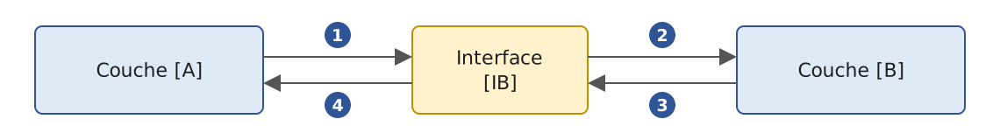
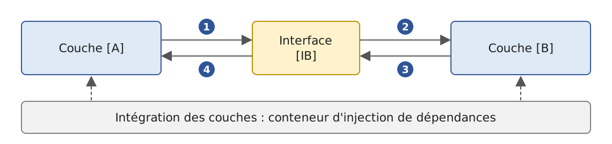
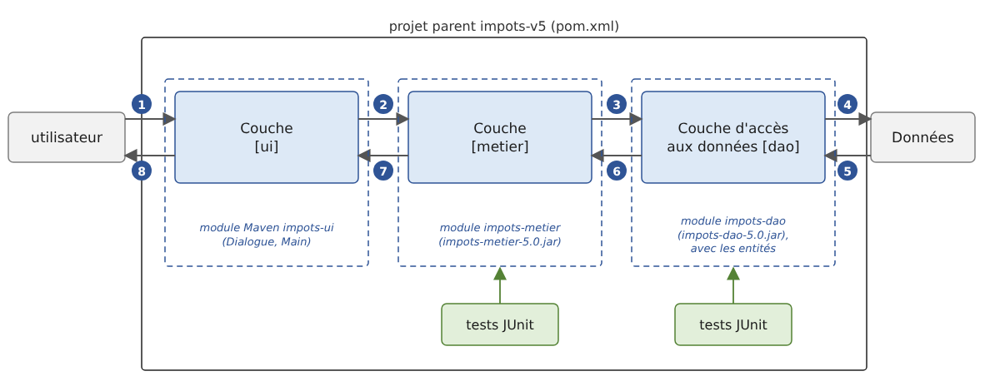

6. Layered Architectures
6.1. Introduction
Let’s revisit the latest version of the tax calculation application (version 3, Chapter 5). Stripped down to its essentials, its main program had the following structure (simplified diagram):
This program combines three types of processing found in most applications:
- retrieving data stored in files, databases, etc.: lines 1–8;
- user interaction: lines 11–12 (input) and 14 (output);
- the use of a business algorithm, the tax calculation: line 14. This calculation was previously performed by the abstract class [AbstractImpot], the parent class of [FileImpot] and [JsonImpot]: in version 3, data reading and calculation are still combined within a single object.
Experience has shown that isolating these different processes into separate classes improves application maintainability. The architecture of an application structured in this way is as follows:

This architecture is called “three-tier architecture.” The term “tier” normally refers to a part of the application that runs on a different machine. When the parts are on the same machine, the term “layered architecture” is used instead:
- The [metier] layer contains the application’s business rules. For our application, these are the rules used to calculate a taxpayer’s tax. This layer requires data to function:
- tax brackets, which change every year;
- the number of children, the taxpayer’s marital status, and annual income;
- the data access layer, or [dao] (DAO = Data Access Object), provides data already stored in files or databases. This includes the tax brackets, as in version 3 of the application;
- the user interface layer, or [ui] (UI = User Interface), provides the data entered by the user and displays the results to the user. This applies here to the number of children, marital status, and the taxpayer’s annual income.
In general:
- the [dao] layer handles access to persistent data (files, databases) or non-persistent data (network, sensors, etc.);
- the [ui] layer handles interactions with the user, if there is one;
- the three layers are made independent of one another through the use of interfaces.
We will revisit the [Impots] application, which we have already examined several times, to give it a layered architecture. First, we need to define the interfaces for the application’s various layers.
6.2. The interfaces of the [Impots] application
Remember that an interface defines a set of method signatures. Classes that implement the interface provide the implementation for these methods.
Let’s return to the layered architecture of our application:
In this type of architecture, the user often takes the initiative. The user makes a request in [1] and receives a response in [8]. This is called the request-response cycle. Let’s take the example of calculating a taxpayer’s tax. This will require several steps:
- The [ui] layer asks the user for their marital status, number of children, and annual salary. This is the [1] operation described above;
- once this is done, layer [ui] asks layer [metier] to calculate the tax. To do this, it sends the data it received from the user to that layer. This is operation [2];
- The [metier] layer needs certain information to complete its task: the tax brackets. It requests this information from layer [dao] via path [3, 4, 5, 6]: [3] is the initial request, and [6] is the response to that request;
- With all the data it needed, layer [metier] calculates the tax;
- The [metier] layer can now respond to the request made by the [ui] layer in [2]. This is the [7] path;
- The [ui] layer formats this result and then presents it to the user. This is the path [8];
- One could imagine that the user might run tax simulations and want to save them. They would use the same path, [1-8], to do so.
As seen in this description, a layer uses the resources of the layer to its right, never those of the layer to its left. Consider two adjacent layers:

The layer [A] makes requests to the layer [B]. In the simplest cases, a layer is implemented by a single class. But an application evolves over time, and the layer [B] may successively have different implementation classes: [B1], [B2], and so on. If the [B] layer is the [dao] layer, it may have an initial implementation, [B1], that retrieves data from a file. A few years later, you might want to store this data in a database: in that case, you create a second implementation class, [B2]. If, in the initial application, the [A] layer worked directly with the [B1] class, we would be forced to partially rewrite the code for the [A] layer. For example, suppose we wrote something like the following in the [A] layer:
- Line 1: An instance of the [B1] class is created;
- line 3: data is requested from this instance.
If the new implementation class [B2] has methods with the same signature as the class [B1], you’ll need to change all instances of [B1] to [B2]. This is the best-case scenario, and it is quite unlikely if you have not paid attention to these signatures. In practice, it is common for the classes [B1] and [B2] to have different method signatures, meaning that a significant portion of the [A] layer must be rewritten.
This issue can be mitigated by inserting an interface between the [A] and [B] layers. This freezes the method signatures that the [B] layer exposes to the [A] layer within an interface. The previous diagram becomes the following:

The [A] layer no longer communicates directly with the [B] layer, but rather with its [IB] interface. In the code for the [A] layer, the implementation class [Bi] of the [B] layer now appears only once, when the object that implements the [IB] interface is created. After that, the [IB] interface—and not its implementation class—is used. The previous code becomes:
- Line 1: An instance of
*[ib]that implements the*[IB]interface is created by instantiating the*[B1]* class; - Line 3: Data is requested from the [ib] instance.
Now, if we replace the [B1] implementation of the [B] layer with a [B2] implementation, and both of these implementations adhere to the same [IB] interface, only line 1 of the [A] layer needs to be modified. This is a major advantage that, on its own, justifies the systematic use of interfaces between two layers.
We can go even further and make the [A] layer completely independent of the [B] layer. In the code above, line 1 poses a problem because it hard-codes the class name [B1]. Ideally, the [A] layer should receive an implementation of the [IB] interface without having to specify a class name. This would be consistent with the diagram above: the [A] layer interfaces with the [IB] interface, and there is no reason why it would need to know the name of the class that implements that interface.
This is what dependency injection (DI) enables. The previous architecture evolves as follows:

A cross-cutting component—the dependency injection container—creates the objects that implement the layers and connects them to one another: it passes the [A] layer a reference to the object that implements the [B] layer. The code for the [A] layer then takes the following form:
- Lines 5–7: The [A] layer receives, via its constructor, a [ib] instance that implements the [IB] interface. It is not the [A] layer that creates it, but the container;
- Line 11: Data is requested from the [ib] instance.
The implementation class [B1] no longer appears anywhere in the code of the [A] layer. When the implementation [B1] is replaced by a new implementation [B2], nothing will change in the code of the [A] layer: the only thing that will change is the single location in the application where the container is told which class implements [IB]. This location can even read the name of the implementation to use from a configuration file.
In the Java world, dependency injection was popularized in the early 2000s by the Spring framework, whose configuration was then written in XML files. The Spring Framework, now in version 7, remains the industry standard; it forms the basis of Spring Boot, which we will use in Chapter 13, “Web Services .” We’ll use its container in version 5 of the application (there are others, such as CDI, the Jakarta standard EE, or Google Guice). The combination of “Java interfaces + dependency injection” significantly improves application maintainability by making the layers independent of one another.
Let’s return to the layered architecture of our application. In simple cases, we can start with the [metier] layer to discover the application’s interfaces. To function, the application needs data:
- already available in files, databases, or via the network. This data is provided by the [dao] layer;
- not yet available. In that case, they are provided by the [ui] layer, which obtains them from the user.
What interface must the [dao] layer provide to the [metier] layer? The [dao] layer must provide the tax brackets to the [metier] layer. In our application, the [dao] layer uses existing data but does not create new data. Its interface can be as follows:
- Line 1: The interface is located in package [dao]. The file [IImpotDao.java] must therefore be located in a folder named [dao], as we will see;
- Line 10: The [IImpotDao] interface defines the [getTranchesImpot] method, which provides the tax brackets to the [metier] layer. Java does not have properties: read-only data is exposed via the [getXxx] method, in accordance with the JavaBeans convention. The tax brackets are returned as a [List<TrancheImpot>] list rather than an array: we will see that the implementations return an immutable list, whereas the elements of an array can always be modified by the recipient;
- line 3: imports the type [TrancheImpot], defined in the package [entites]:
A tax bracket is represented by a record (Java 16): a non-modifiable class for which the compiler generates the constructor (based on the components declared in parentheses after the type name), the fields [private final], the accessors [limite()], [coeffR()] and [coeffN()], as well as the methods [equals], [hashCode], and [toString]. We write [new TrancheImpot(limite, coeffR, coeffN)] to create a slice. The three components are of type [BigDecimal], the Java class for exact decimal numbers: a [double] cannot exactly represent 0.068 or 291.09. Since a *[BigDecimal] is itself immutable, a slice cannot be changed once it has been created. A traditional JavaBean class, with [setXxx] methods, would have allowed this; we will see that this limitation eliminates a side effect of an older way of implementing the [metier]* layer.
What interface should the [metier] layer present to the [ui] layer? Let’s review the interactions between these two layers:
- The [ui] layer asks the user for their marital status, number of children, and annual salary. This is operation [1] in the schema;
- Once this is done, the [ui] layer asks the [metier] layer to calculate the tax. To do so, it sends the data it received from the user to the [metier] layer. This is operation [2].
The interface for layer [metier] might look like this:
- Line 1: Everything related to the [metier] layer is placed in the [metier] package;
- line 6: the [IImpotMetier] interface defines only one method, which calculates a taxpayer’s tax based on their marital status, number of children, and annual salary. The methods of an interface are implicitly public and abstract: there is no need to write [public abstract].
We will now examine an initial implementation of this layered architecture.
6.3. Sample Application—Version 4
6.3.1. The Project
Version 4 is a program consisting of several source files that does not use any external libraries. We will run it using the Java source code launcher, without creating a Maven project. Each layer occupies a separate folder:
- The [entites] file contains the cross-layer types for the layers [ui], [metier], and [dao]: the record [TrancheImpot], the exception [ImpotException], and the enumeration [CodeErreur] of its error codes;
- the [dao] file contains the interface and classes of the [dao] layer. We will use two implementations of the [IImpotDao] interface: the [HardwiredImpot] class, whose data is hard-coded (version 2), and the [FileImpot] class, which reads data from a text file (version 3). Reading a JSON file—the other option in version 3—will be covered in version 5;
- the folder [metier] contains the interface and the class for the layer [metier];
- the folder [ui] contains the class for the layer [ui];
- The file [Main.java] creates the layers and links them together;
- the file [DataImpot.txt] contains the tax brackets read by the [FileImpot] implementation of the [dao] layer.
Unlike in other languages, folder names matter here: in Java, a class from the [dao] package is located in a folder named [dao], a class in the [impots.dao] package is in a [impots/dao] folder, and these folders are relative to the source root. This is how the compiler and the virtual machine locate the classes based on their fully qualified names.
The file [Main.java] is a compact source file: it has no package declaration and therefore belongs to the unnamed package at the source root. Starting with Java 22 (multi-file program launcher, JEP 458), the command [java Main.java], entered in the [ImpotsV4] folder, is sufficient to run the program: the source code launcher compiles [Main.java] in memory, and whenever it encounters a class from another file—for example, [dao.FileImpot]— it searches for the file [dao/FileImpot.java] starting from the directory of [Main.java] and compiles it in turn. No file named [.class] is written to disk. A class from the unnamed package can use classes from other packages, but the reverse is not possible: no class can import [Main]. This is why only the main program is placed there.
A IDE opens this folder as-is and runs [Main.java] without any special configuration. When the program requires external libraries (Jackson, Spring), in version 5, we will switch to a Maven project.
6.3.2. Application Components

We refer to types that span multiple layers as entities. These are generally the classes that encapsulate the data from the [dao] layer. These entities typically extend all the way up to the [ui] layer. The application entities are the [TrancheImpot] record, which has already been presented, and the [ImpotException] exception, along with its enumeration of error codes:
- line 6: an enumeration ([enum]). In Java, the values of an enumeration are objects—unique instances of the [CodeErreur] class—and an enumeration can have methods;
- line 7: the five error codes. The method [ordinal()], inherited from the class [Enum], returns the position of the value in the list: 0 for [ACCES], 4 for [CHAMP3];
- Lines 10–12: Each code is associated with a bit, obtained by a left shift: [1 << ordinal()] equals 1, 2, 4, 8, and 16. These powers of 2 can be combined using the operator [|]: the code [CHAMP2.bit() | CHAMP3.bit()] (8 + 16 = 24) means that fields 2 and 3 of a line are incorrect. Version 3 explicitly specified the value of each code ([ACCES(1)], [LIGNE(2)]…) and decoded a combination into a set [EnumSet]; calculating the bit based on the position eliminates the need for these values here. The exception’s error code remains a simple integer, which all implementations of the [dao] layer can use;
- lines 15–23: The static method [noms] returns the names of the codes present in a bit combination: “CHAMP2, CHAMP3” for 24. The method [values()], generated by the compiler, returns the array of enumeration values; [code & c.bit()] is not null if the bit corresponding to code [c] is present in [code]; [name()] returns the name of the value. A [StringJoiner] (Java 8) concatenates strings, separating them with the separator provided to its constructor.
- Line 7: An application-specific exception is derived from the [RuntimeException] class; it is an unchecked exception. The methods that throw it do not need to declare it in a [throws] clause, and their callers are not required to catch it. This is the standard approach for errors that one layer reports to another layer;
- lines 10–11: an exception is serializable (the class [Throwable] implements the interface [Serializable]). The [serialVersionUID] field specifies the class version for serialization; without it, the compiler, when using the [-Xlint:all] option, issues a warning. The annotation [@Serial] (Java 14) allows the compiler to verify the declaration of this field;
- line 14: the error code, an integer that combines bits [CodeErreur]. The field is [final]: it is initialized in the constructor and cannot be changed afterward;
- lines 17–24: two constructors, one with a message and a code, the other with the original exception (the cause) in addition, which will be accessible via the [getCause()] method. The first calls the second ([this(...)]), which calls the constructor of the parent class [RuntimeException] ([super(...)]);
- lines 27–29: the error code accessor.
In this version, only the [FileImpot] class in the [dao] layer throws [ImpotException].
6.3.3. The [dao] layer
Let’s review the interface of the [dao] layer:
We implement this interface in two different ways. First, with the [HardwiredImpot] class:
- line 8: the class [HardwiredImpot] implements ([implements]) the interface [IImpotDao];
- Lines 11–18: the tax brackets. [List.of] (Java 9) creates a read-only list: its methods [add], [set] or [remove] call [UnsupportedOperationException]. The field is initialized in its declaration;
- lines 20–23: the implementation of the interface method. The annotation [@Override] instructs the compiler to verify that the method correctly implements a method of the interface: a typo in its name would cause a compilation error;
- Lines 26–28: A private method that creates a slice from three strings. A [BigDecimal] constructed from a string is exact: [new BigDecimal("0.068")] is exactly 0.068, whereas [new BigDecimal(0.068)] would be 0.0680000000000000049…, making [double] the closest to 0.068.
The [IImpotDao] interface is also implemented by the [FileImpot] class, which reads tax brackets from a text file. The [DataImpot.txt] file is as follows:
Each line describes a tax bracket in the format [limite:coeffR:coeffN]. Numbers are written with a decimal point, regardless of the system language; this ensures the file is readable on all machines. The values are those from the 2004 tax schedule for 2003 income, retained as-is: this is an exercise. The class [FileImpot] is as follows:
- Lines 3–7: Static import ([import static], Java 5) allows you to use the static members of a class without prefixing them with the class name. The values of an enum are static members: we write [CHAMP1] instead of [CodeErreur.CHAMP1];
- line 21: the class [FileImpot] implements the interface [IImpotDao];
- Lines 24, 27: the file name and the read segments. These [final] fields are initialized only once, in the constructor (lines 32 and 76). They are returned by the methods on lines 79–86; [getTranchesImpot] is the interface method;
- line 30: the constructor receives the name of the tax bracket file;
- line 34: the read tax brackets are accumulated in a list named [ArrayList];
- line 38: [Path.of] (Java 11) creates the file path. A relative path is relative to the current directory, the one in which the [java] command was entered;
- Lines 39–41: If the file does not exist, a [NoSuchFileException] ([java.nio.file] package) is launched with a message in French. Its three-parameter constructor takes the file name, the name of a possible second file (here, [null]), and the reason for the error. The exception messages for JDK are in English: without this test, [Files.readAllLines] would itself launch a [NoSuchFileException] whose message would consist solely of the file name;
- Line 42: [Files.readAllLines] reads the entire file using UTF-8 and returns a list of its lines. The method opens and closes the file itself. For a large file, it would be preferable to read it in real time using [Files.lines] or [BufferedReader];
- line 45: [strip()] (Java 11) removes leading and trailing spaces;
- line 50: the line is split by [split], whose parameter is a regular expression: the separator is a colon, possibly surrounded by spaces ([\s*] matches zero or more spaces). In a Java string, the backslash is doubled;
- Lines 53–54: A line that does not have three fields is invalid;
- lines 57–62: conversion of the three fields. Each incorrect field adds a bit to the error code using the operator [|=];
- lines 65–67: an invalid line triggers a [ImpotException], whose message provides the line number and content. This exception is not a [IOException]: it is not caught on line 71 and is propagated as-is to the caller;
- line 69: the read block is added to the list;
- lines 71–74: All I/O errors stem from [IOException]: file not found ([NoSuchFileException]), insufficient permissions ([AccessDeniedException]), file not in UTF-8 ([MalformedInputException]), etc. The error is wrapped in a [ImpotException] with code [ACCES]; the original exception is retained as the cause;
- line 76: [List.copyOf] (Java 10) returns a read-only copy of the list;
- Lines 89–91: Conversion of a field to [BigDecimal]. The [matches] method verifies that the entire string matches the regular expression [\d+(\.\d+)?]: one or more digits, optionally followed by a period and more digits. Thus, “0.191” is rejected, as is any negative number. The constructor [BigDecimal(String)] is not dependent on the user’s language: it always expects a decimal point. In case of an error, the method returns [null].
6.3.4. The [metier] layer
Let’s review the interface for this layer:
Its implementation, [ImpotMetier], is as follows:
- Line 10: The class [ImpotMetier] implements the interface [IImpotMetier]. The [metier] layer must collaborate with the [dao] layer: it therefore receives, via its constructor (line 16), a reference to the object that implements the [IImpotDao] interface;
- Lines 13, 16–18: When the object is constructed, the [metier] layer requests the tax brackets from the [dao] layer once and for all and stores them in a [final] field. Note that the [metier] layer knows the [dao] layer only through its [IImpotDao] interface: it does not know whether the tax brackets come from the code, a file, or, later, a database;
- lines 24–29: The [metier] layer does not trust its callers. An incorrect parameter triggers a [IllegalArgumentException], the uncaught exception that Java provides for this case, with a message that identifies the parameter;
- lines 31–35: the number of shares. A [BigDecimal] has no arithmetic operators: instead, its methods [add], [subtract], [multiply], and [divide] are used. Since it is immutable, each operation returns a new object, hence the notation [nbParts = nbParts.add(...)]. Division by [BigDecimal.TWO] (a constant added in Java 19) is exact: 3 children result in 1.5 shares;
- lines 37–38: taxable income and the family quotient. Division by the number of shares can result in an infinite number of decimal places (division by 3, for example): without specified precision, [divide] would then trigger a [ArithmeticException]. [MathContext.DECIMAL128] limits the result to 34 significant digits;
- lines 41–47: We search for the first bracket whose threshold is greater than or equal to the family quotient. The [BigDecimal] values are compared with [compareTo], which returns a negative, zero, or positive number: [qf.compareTo(limite) <= 0] means [qf <= limite]. The last bracket, [tranches.getLast()] (Java 21), is used if none of the others apply: its threshold (0) is not used;
- line 49: the tax. [intValue()] returns the integer part of the result.
A method that was once common involved modifying the limit of the last bracket (something like [tranches[tranches.length - 1].setLimite(qf + 1)]) before the search so that the search loop would always stop. This instruction modified the array provided by the [dao] layer: a side effect on data shared by all layers. We could no longer write it here, since a [TrancheImpot] is unmodifiable, as is the list that contains them. Modern code simply takes the last segment when no boundary is suitable, without modifying the data it receives.
6.3.5. The [ui] layer
In versions 2 and 3, the user interface was written in the main program, following the creation of the calculation object. The only difference was in how this object was created. We now isolate this interaction in a class within the [ui] layer, which knows the [metier] layer only through its interface:
- Line 6: The class [Dialogue] has no state of its own and contains only static members. Java does not have top-level static classes: we declare the class [final] (which cannot be subclassed) and give it a private constructor (lines 16–17), which prevents instances from being created;
- lines 9–13: the help message is a text block (Java 15), delimited by three quotation marks. It can span multiple lines; the standard indentation of the lines is removed. Since the closing quotation marks are placed at the end of the last line, the text does not end with a line break;
- line 20: the method
[run]receives the layer[metier]in the form of its interface[IImpotMetier]. It knows nothing about the class that implements it or the layer[dao]; - Lines 23–25: [IO.readln] (Java 25) prints its parameter and then reads a line from the keyboard. It returns [null] at the end of the input stream; line 25 then replaces [null] with the empty string: an end-of-stream signal terminates the dialog just like an empty line;
- line 31: the entered line is split by spaces; the regular expression [\s+] (one or more spaces) ignores multiple spaces;
- lines 37–38: the strings are compared with [equals], never with [==], which compares references;
- lines 43–53: the number of children and the salary must be positive integers or zero. The [entier] method (lines 60–66) returns -1 if the field is not an integer: [Integer.parseInt] then calls a [NumberFormatException], which is intercepted. A negative number and an incorrect entry are thus rejected by the same check;
- line 55: the parameters are correct: the calculation is requested from the [metier] layer.
6.3.6. Integrating the layers
All that remains is to create the layers and link them together. This is the role of the main program [Main.java]:
- Lines 1–8: A compact source file (Java 25) does not have a class declaration, but it may contain imports. The compiler places its contents in an implicit class;
- line 13: the [main] method receives command-line arguments in the [args] array. The argument selects the implementation of the [dao] layer: [hardwired] for the [HardwiredImpot] class; otherwise, the name of the file read by the [FileImpot] class—[DataImpot.txt] by default;
- line 18: creation of layer [dao]. This is the only place in the program where the classes [HardwiredImpot] and [FileImpot] are named;
- line 20: creation of layer [metier], which receives layer [dao];
- Lines 21–28: The creation of layer [dao] may trigger the creation of [ImpotException]. The error is then displayed, along with the message from the original exception (if any), and the program terminates with exit code 1 ([System.exit(1)]). The error code is displayed in plain text using the [CodeErreur.noms] method. The [return] statement on line 27 is never executed, but the compiler is unaware that [System.exit] does not yield control: without it, the compiler would report that the variable [metier] may not be initialized on line 31;
- Line 31: The layers are ready: the [ui] layer interacts with the user.
6.3.7. Executions
In the [ImpotsV4] folder, with the [DataImpot.txt] file ([FileImpot] implementation), and when testing input validation:
With the implementation [HardwiredImpot]:
With a file that does not exist:
The error code is [ACCES], and the original exception message, [NoSuchFileException], is displayed: it consists of the file name, followed by the reason provided to its creator.
With the following file, [DataImpotInvalide.txt], where line 3 contains decimal commas:
the result is:
Fields 2 and 3 of line 3 are incorrect: the error code combines the bits from [CHAMP2] and [CHAMP3], and the [CodeErreur.noms] method displays it as “CHAMP2, CHAMP3.”
6.3.8. Conclusion
The layered architecture and the use of interfaces have brought a certain flexibility to our application. This is evident in the way the main program creates the layers [dao] and [metier]:
Changing the implementation of the [dao] layer affects only line 2. Once the layers are created, the code for the [ui] layer is the same in both cases: the [metier] layer is manipulated there through its [IImpotMetier] interface, not through its implementation class.
The same flexibility is evident in the [metier] layer: it is built based on a reference to the interface of the [dao] layer. Changing the implementation of the latter therefore has no impact on the [metier] layer. This is why our single [ImpotMetier] class was able to work without modification with two different implementations of the [dao] layer.
6.4. Sample Application - Version 5

This new version builds on the previous one with the following changes:
- The layers [dao] and [metier] are each placed in a Maven module that generates a library (a JAR file) and tested using the unit testing framework JUnit;
- The [dao] layer now includes a third implementation, [JsonImpot], which reads tax brackets from a JSON file using the Jackson library;
- The integration of the layers is handled by Spring’s dependency injection container, and the implementation of the [dao] layer is selected from a configuration file.
In large projects, multiple developers work on the same application. Layered architectures facilitate this way of working: because the layers communicate with each other through well-defined interfaces, a developer working on one layer does not have to worry about the work of other developers on other layers. All that is required is that everyone adheres to the interfaces.
Thus, to test the [metier] layer, the developer needs an implementation of the [dao] layer. Until that implementation is complete, they can use a dummy implementation of the [dao] layer, provided it adheres to the [IImpotDao] interface. This is another advantage of the layered architecture: a delay in the [dao] layer does not prevent the [metier] layer from being tested. The mock implementation also has the advantage of being much simpler to set up than the actual [dao] layer, which may require a SGBD, network connections, etc.
Once the [dao] layer is complete and tested, it is provided to the developers of the [metier] layer in the form of a library (a JAR file published in a Maven repository) rather than source code to be copied. Ultimately, the application is delivered as a main program (the one from the [ui] layer) and class libraries (the other layers).
6.4.1. The ImpotsV5 Maven Project
Version 5 is a multi-module Maven project: a parent project, which does not produce anything on its own, contains three modules, one per layer. The tests do not form a separate project: the Maven convention places a module’s tests in its [src/test/java] folder. They are compiled and run by Maven but are not part of the module’s JAR file. This results in the following directory structure:
The packages are now prefixed with [impots]: [impots.entites], [impots.dao], [impots.metier], [impots.ui]. The modules [impots-dao] and [impots-metier] will in fact be reused by other projects (Chapters 10 through 13), and two libraries used by the same program must not define two classes with the same fully qualified name. In professional projects, packages are prefixed with the organization’s reverse domain name ([org.springframework], [tools.jackson]…), which ensures unique names.
The file [pom.xml] in the parent project is as follows:
- Lines 8–11: the parent project’s details: group [exemples.impots], name [impots-v5], version [5.0]. The packaging type [pom] indicates that the project does not produce a JAR file: it simply groups modules together and applies a common configuration to them;
- lines 14–18: the modules, i.e., the subfolders, each of which contains a Maven project. A Maven command entered in the [ImpotsV5] folder applies to all modules, in the order dictated by their dependencies: [impots-dao], then [impots-metier], then [impots-ui];
- lines 20–23: the properties inherited by the modules: Java 25 and source files in UTF-8;
- lines 26–54: the section [dependencyManagement] specifies the versions of the dependencies without adding them to the modules. A module that requires a dependency declares it without a version; this way, all versions are consolidated in a single location. It includes the application modules themselves (lines 28–37), Jackson 3 (lines 38–42), the Spring container (lines 43–47), and JUnit (lines 48–52);
- lines 57–63: the parent’s [dependencies] section adds its dependencies to all modules: in this case, JUnit, with the scope [test]. A dependency with the scope [test] is used only for compiling and running tests: it is not included in the dependencies of the produced library;
- lines 66–91: the [pluginManagement] section similarly sets the version and configuration of the Maven plugins for all modules: the compiler (with the [-Xlint:all] option, lines 75–77), Surefire, which runs the tests ([mvn test]), and exec, which runs a program ([mvn exec:java]). Line 74 instructs the compiler to preserve the names of the method parameters in the compiled code: JUnit uses this to display parameterized tests, as we will see.
The application is built using the following command, entered in the [ImpotsV5] folder:
For each module, Maven executes the phases of its lifecycle in the following order: compilation ([compile]), compilation and test execution ([test]), creating the JAR file in the module’s [target] folder ([package]), and finally installation ([install]). If a test fails, the build stops. The [install] phase copies the JAR file and the [pom.xml] file from each module to the user’s local Maven repository, the [~/.m2/repository] folder: for example, the [exemples/impots/impots-dao/5.0/impots-dao-5.0.jar] file is located there. Maven searches this local repository for dependencies before downloading them from Maven Central. This local repository serves two purposes:
- a Maven command entered in a module’s folder—for example,
[mvn exec:java]in the*[impots-ui]*folder—finds the modules on which that module depends in the local repository; - the applications in Chapters 10 through 13 declare dependencies in their [pom.xml] files on [exemples.impots:impots-dao:5.0], [exemples.impots:impots-metier:5.0], and, for the [Dialogue] class, [exemples.impots:impots-ui:5.0]: they thus reuse the layers from version 5 without copying the source code, just as they would use Jackson or Spring.
After making any changes to a module, you must therefore rerun [mvn install] so that the other projects can see the new version. The [-DskipTests] option skips running the tests, and the [-q] (“quiet”) option limits Maven’s output to errors only.
If you open a project in IDE that depends on these modules before installing version 5, Maven will search for them in vain on Maven Central, and IDE will report unresolved dependencies, for example, “Unresolved dependency: 'exemples.impots:impots-dao:jar:5.0' " in IntelliJ IDEA. Maven keeps track of this failure: it leaves files named [*.lastUpdated] in each module’s folder within the local repository ([%USERPROFILE%\.m2\repository\exemples\impots\impots-dao\5.0], etc.), and the error may persist after the [mvn install] build. The solution:
- Install version 5 ([mvn install] in the [ImpotsV5] folder, or, in IntelliJ, the “Maven” panel / [impots-v5] / “Lifecycle " / [install]);
- delete the [*.lastUpdated] files from the [impots-dao/5.0], [impots-metier/5.0], and [impots-ui/5.0] from the local repository, without touching the files [.jar] and [.pom];
- resynchronize the projects (using the “Sync All Maven Projects” button in the “Maven” panel) and, if the error persists, clear the caches for IntelliJ (“File / Invalidate Caches… / Invalidate and Restart”).
To determine whether the problem stems from Maven or IDE, type [mvn compile] in the project folder that depends on version 5: if Maven responds “BUILD SUCCESS,” the dependencies are correct and only IDE needs to be resynchronized.
6.4.2. The [dao] layer
The [impots-dao] module contains the [dao] layer and the application entities. Its [pom.xml] file is as follows:
- lines 8–12: the parent project. The module inherits the group and version from it; only its name is specified (line 14). Its coordinates are therefore [exemples.impots:impots-dao:5.0];
- lines 18–21: the dependency on Jackson, without a version: this is determined by the parent project. JUnit is inherited from the parent.
The Entities
The record [TrancheImpot] corresponds to version 4 (package [impots.entites]). The enumeration [CodeErreur] is removed: [ImpotException] thus becomes common to all implementations of the [dao] layer, without being linked to the codes of any of them:
- line 14: the error code remains a simple integer: each implementation of the [dao] layer defines its own codes;
- lines 17–32: four constructors, with or without a cause, with or without a code. They all call the last one. Without a code, this one is 0.
The [FileImpot] implementation
The [IImpotDao] interface and the [HardwiredImpot] class are those of version 4. The [FileImpot] class differs only in the way it writes its error codes:
- Line 6: The error codes, which were previously in the [CodeErreur] enumeration in the entity package, have become constants in the [FileImpot] class: These are, in fact, codes specific to this implementation of the [IImpotDao] interface ([JsonImpot] has its own). In Java, a constant is a field [static final], whose name is conventionally written in uppercase. Multiple fields of the same type can be declared in the same statement. Constants are written as [CHAMP1] within the class and as [FileImpot.CHAMP1] outside the class. Static imports from version 4 are no longer necessary.
Further on in the constructor:
- lines 4–14: the codes are integers that are combined directly with the operator [|=];
- Lines 17, 24: The errors are encapsulated in a [ImpotException], along with their codes.
The [JsonImpot] implementation
Like version 3 of Chapter 5, the third implementation of the [dao] layer reads the tax brackets from a JSON file using the Jackson library. The [DataImpot.json] file is as follows:
The [JsonImpot] class is as follows:
- Line 17: Error codes for this implementation: file access error or incorrect content;
- Lines 29–37: The file is read in its entirety into a string by [Files.readString] (Java 11), with the same I/O error handling as in [FileImpot];
- line 40: the string JSON is converted to an array [TrancheImpot[]]. In Jackson 3, whose packages begin with [tools.jackson], the [JsonMapper] object that performs the conversion is immutable: it is constructed using an intermediate object, the “builder” ([JsonMapper.builder()...build()]). Its method [readValue] takes the text JSON and the class of the object to be created, in this case [TrancheImpot[].class]. Jackson knows how to construct a record: it maps the names JSON ([limite], [coeffR], [coeffN]) to the record’s components and calls its constructor. The numbers are read directly into [BigDecimal], the component type, without going through a [double]: they are therefore exact;
- lines 41–43: [readValue] returns [null] if the file contains the literal JSON [null]; in that case, an exception is thrown;
- line 44: the array becomes an immutable list;
- lines 45–48: A file that is not a JSON array of chunks causes a [JacksonException]. In Jackson 3, this exception is derived from [RuntimeException]: it is an uncaught exception. The [catch] block catches two types of exceptions (“multi-catch,” Java 7) and wraps them in a [ImpotException] of type [FORMAT].
A Test Program
Before writing automated tests, let’s perform an initial visual test of the [dao] layer. The [EssaiDao] program displays the slices provided by the three implementations. We have placed it in the module’s test sources ([src/test/java]): it will not be included in the [dao] layer’s JAR file:
- line 10: the [main] method. Starting with Java 25, it would no longer need to be public or accept program arguments; in Maven projects, we retain its classic form [public static void main(String[] args)], which is recognized by all tools ([exec-maven-plugin] plugin, IDE);
- lines 12–13: a list of the three implementations of the [IImpotDao] interface;
- line 15: [getClass()] returns the actual class of the object, whose name (without the package) is [getSimpleName()];
- line 17: [IO.println] displays the slice using its method [toString], which is generated by the compiler for a record;
- lines 20–26: Handles a potential [ImpotException].
The program runs in the [impots-dao] folder. The [test-compile] phase compiles the main source code and the test source code; the parameter [exec.mainClass] specifies the class to be executed, and [exec.classpathScope=test] instructs the exec plugin to use the test classes and scope dependencies [test]:
All three implementations return the same ranges. The [toString] method of a [BigDecimal] always writes a decimal point, regardless of the user's language.
6.4.3. The [metier] layer
The [pom.xml] file in the [impots-metier] module is as follows:
- Lines 18–21: The [metier] layer uses the [dao] layer. In the [ImpotsV5] folder, Maven builds [impots-dao] before [impots-metier]; in the [impots-metier] folder, it finds [impots-dao] in the local repository, where [mvn install] placed it. Dependencies are transitive: the module also receives Jackson, on which [impots-dao] depends.
The [IImpotMetier] interface and the [ImpotMetier] class are those from version 4 (package [impots.metier]). The test program [EssaiMetier], located in the module’s test sources, performs some tax calculations:
- line 12: creation of layers [dao] and [metier]. The layer [dao] is implemented by the class [FileImpot]. Since the program runs in the [impots-metier] folder, the relative path [../impots-dao/DataImpot.txt] refers to the data file for the [impots-dao] module;
- lines 13–16: repeated calls to the single method of the [IImpotMetier] interface.
Results, in the [impots-metier] folder:
A married couple with 2 children and a single person with 3 children have the same number of tax brackets (3): their taxes are equal.
6.4.4. Unit tests with JUnit
6.4.4.1. The Principle
The tests performed so far relied on visual verification: we checked that the screen displayed the expected results. This method is impractical when there are many tests to run: humans are prone to fatigue, and their ability to verify results diminishes as the day goes on. The tests must therefore be automated and require no human intervention.
An application evolves over time. With each update, we must verify that it does not “regress”—that is, that it continues to pass the functionality tests performed during its initial development. These tests are called non-regression tests. A moderately large application may require hundreds of tests: in fact, every method in every class of the application is tested. These are called unit tests.
Frameworks have been developed to automate these tests. In Java, the leading framework is JUnit, created in the late 1990s by Kent Beck and Erich Gamma. We use version 6, released in late 2025 (here, version 6.0.3); its API, the one included in the [org.junit.jupiter.api] package, is version 5 of JUnit, also known as JUnit Jupiter (TestNG is another framework based on the same principle). The tests are run by the [mvn test] command from the command line: this is what allows them to be launched automatically, for example, whenever code changes are pushed to a continuous integration server. The IDE (IntelliJ, IDEA, VS—code with the Extension Pack for Java) also run these tests and display their results in a tree structure.
6.4.4.2. A First Example
Let’s examine the principle behind JUnit tests using an example. The Maven project [TestsDemo] contains only tests, located in the [src/test/java/testsdemo] folder. Its [pom.xml] file is as follows:
- lines 18–23: The project uses the artifact [junit-jupiter], which includes the test artifact API (the annotations and the [Assertions] class), support for parameterized tests, and the engine that discovers and executes the tests. Its scope is [test];
- line 33: the compiler preserves the names of the method parameters, which JUnit displays for parameterized tests;
- lines 40–44: the Surefire plugin, which runs the tests during the [test] phase of Maven.
The test class [Tests1] is as follows:
- Line 3: The verification methods, or assertions, are static methods of the [Assertions] class. They are imported using a static import so that we can write [assertEquals(...)] instead of [Assertions.assertEquals(...)];
- line 10: A test class is a regular class, without annotations. It does not need to be public, nor do its methods: package visibility is sufficient;
- lines 13–15: the method being tested. In a real project, it would be in the project’s main source code ([src/main/java]);
- lines 18–20: the constructor. It is used only to print a message to the screen: we want to see when it is executed;
- line 23: the annotation [@BeforeEach] designates a method executed before each test;
- line 29: the annotation [@AfterEach] designates a method executed after each test;
- line 35: the annotation [@Test] designates a test method. A test method returns nothing, is not private, and—with one exception we’ll discuss—has no parameters;
- line 38: the method [assertEquals(attendu, obtenu)] verifies that the obtained value equals the expected value. If this is not the case, it throws a [AssertionFailedError] exception and the test fails. Here, the assertion must pass;
- line 45: this assertion must fail. The third parameter is the message displayed in case of failure: in JUnit, the message is always the last parameter of the assertions.
We run the tests using the command [mvn test] in the project folder. Below is a screenshot of the JUnit console launcher, which displays the tests in a tree structure; [mvn test] runs the same tests, and IDE displays the same tree. We have abbreviated the call stack (lines [...]):
- Lines 2–5: the output from the [t1] test: the constructor was executed, followed by the [avant] method, the test, and finally the [apres] method. The console launcher displays the test output as it runs, before the summary tree;
- Lines 6–9: Output for test [t2]. Note that the constructor was executed again: JUnit creates a new instance of the test class for each test. The tests are thus independent of one another: one test cannot be affected by the state left by another test (in contrast, the annotation [@TestInstance(Lifecycle.PER_CLASS)] requires a single instance for all tests in the class);
- lines 11–27: the test tree: the JUnit Jupiter engine, the test classes, and then their tests. The ✔ symbol indicates a pass, and the ✘ symbol indicates a failure. The tests in the [Tests2] class, shown below, all passed; JUnit executed them before those of [Tests1]. The execution order of classes and methods is consistent but intentionally non-obvious: tests must not depend on their execution order;
- line 27: the test [t2] failed. The error message contains the message passed to [assertEquals], the expected value, and the actual value. The messages from JUnit are in English;
- lines 29–34: details of the failure: the [AssertionFailedError] exception thrown by the assertion, and the call stack at the time of the failure, which points to the faulty line, line 45 of the [Tests1.java] file;
- lines 38–43: the summary: 12 tests, of which 11 passed and 1 failed. The [mvn test] command then terminates with a build failure (“BUILD FAILURE”) and a non-zero exit code, which allows a script to detect the failure.
To run only a subset of the tests, use the [test] parameter of the Surefire plugin: [mvn test -Dtest=Tests2] runs only the tests in the [Tests2] class, while [mvn test -Dtest=Tests1#t1] runs only the [t1] test. Finally, note the annotations [@BeforeAll] and [@AfterAll], which designate static methods executed only once—before the first test and after the last test of the class— and the annotation [@DisplayName], which gives a test a more descriptive name than that of its method. By default, JUnit executes the tests one after another; parallel execution can be requested in a configuration file [junit-platform.properties].
6.4.4.3. Other assertions
The [Assertions] class has many methods. The [Tests2] class presents a few of them:
- lines 29–30: check whether a Boolean expression is true or false;
- lines 32–33: check whether a reference is non-null or null;
- Lines 34–35: Check whether two references refer to the same object;
- lines 41–43: Calculations involving the real numbers [double] are approximate: [0.1 + 0.2] is not exactly equal to [0.3]. We therefore compare two real numbers to within a certain margin of error, in this case one millionth;
- lines 51–56: JUnit has no assertions specific to strings: we use [assertTrue] to verify the result of the methods [startsWith] or [contains]. [assertIterableEquals] verifies that two collections have the same elements, in the same order. These assertions are grouped by [assertAll], which takes [() -> ...] lambda expressions (Chapter 7): all assertions are executed, even if one of them fails, and failures are reported together. Without [assertAll], the first failure stops the test. The AssertJ library, often used with JUnit, offers more sophisticated assertions, written in the form [assertThat(message).startsWith("Ligne")];
- lines 63–65: [assertThrows(Type.class, action)] executes the action—a lambda expression—and verifies that it throws an exception of type [Type] or a derived type. Here, the method [get] from the list created by [List.of] throws a [ArrayIndexOutOfBoundsException], a class derived from [IndexOutOfBoundsException]: the assertion succeeds. [assertThrowsExactly], on the other hand, requires an exception of exactly type [Type]. Both methods return the thrown exception, which allows its properties to be verified subsequently (line 66);
- lines 70–74: a parameterized test. The annotation [@ParameterizedTest] replaces [@Test]; the method has parameters, and the annotation [@CsvSource] provides sets of values, one string per set, with the values separated by commas. JUnit converts them to the type of the parameters. The test is executed once per set of values: this is shown in lines 18–20 of the previous results;
- lines 77–81: for a single-parameter test, the annotation [@ValueSource] directly provides the list of values ([ints], [strings], [doubles]…).
Let’s summarize the main methods of the [Assertions] class:
Method | Checks that |
[assertEquals(attendu, obtenu)] | the two values are equal (method [equals]) |
[assertEquals(réel1, réel2, delta)] | the two real numbers are equal to within a delta |
[assertNotEquals(v1, v2)] | The two values are different |
[assertSame(o1, o2)], [assertNotSame(o1, o2)] | The two references may or may not refer to the same object |
[assertNull(o)], [assertNotNull(o)] | The reference is null (or not) |
[assertTrue(b)], [assertFalse(b)] | The Boolean expression is true (or false) |
[assertInstanceOf(Type.class, o)] | the object is of type [Type] or a derived type |
[assertArrayEquals(t1, t2)] | both arrays have the same elements, in the same order |
[assertIterableEquals(c1, c2)] | Both collections have the same elements, in the same order |
[assertAll(action1, action2, ...)] | All action assertions succeed (failures are reported collectively) |
[assertThrows(Type.class, action)] | The action throws an exception of type [Type] or a derived type |
[assertThrowsExactly(Type.class, action)] | The action throws an exception of type [Type] exactly |
[fail(message)] | (always fails) |
All of these methods accept an optional final parameter: the message displayed in case of failure.
6.4.4.4. Testing the [dao] Layer
Let's return to the [Impots] application. The [DaoTests] class, which tests the [dao] layer, is located in the [src/test/java/impots/dao] folder of the [impots-dao] module. It belongs to the same package as the classes being tested, which gives it access to their package-visible members. The module’s [pom.xml] does not need to be modified: JUnit is inherited from the parent project. The incorrect data file [DataImpotInvalide.txt] is placed in the module’s folder: this is the current folder during test execution.
- lines 21–28: a method that creates a layer named [dao] based on its class name, using an expression [switch] (Java 14): each [case] returns, after the arrow [->], the value of the expression;
- lines 31–40: The same test is performed for all three implementations using the [@ValueSource] annotation. It verifies that there are 7 slices and checks the value of slice #2 (the third one). The [BigDecimal] values are compared with [compareTo] rather than with [equals]: the [equals] method of a [BigDecimal] takes into account the number of decimal places written (its scale, “scale”) and treats 0.191 and 0.1910 as different, whereas [compareTo] compares only the values;
- Lines 44–48: All three implementations produce exactly the same ranges. [assertEquals] compares the lists using its own method, [equals], which compares elements one by one; the method [equals] of a record, generated by the compiler, compares its components. The comparison succeeds because all three sources write the numbers in the same way;
- lines 52–57: a missing file triggers a [ImpotException] from code [ACCES], which encapsulates a [NoSuchFileException]. [assertInstanceOf] checks the type of the cause;
- lines 61–66: the [DataImpotInvalide.txt] file triggers a [ImpotException] whose code combines the bits of [CHAMP2] and [CHAMP3], and whose message begins with “Line No. 3”;
- lines 70–74: the same verification for the [JsonImpot] implementation.
6.4.4.5. Tests for the [metier] layer
The [MetierTests] class in the [impots-metier] module tests the [metier] layer:
- Lines 19–20: The [metier] layer being tested is built on the [dao] and [HardwiredImpot] layers, which do not depend on any files. The fields are initialized when the object is created; since JUnit creates a new instance of the class for each test, each test has brand-new layers;
- lines 23–34: calculations whose results are known, provided by [@CsvSource]. These are the application’s control values, already obtained by previous versions: they must remain accurate in all future versions. The strings [true] and [false] are converted to [boolean];
- lines 38–42: The tax calculation does not modify the tax brackets provided by the [dao] layer. The tax brackets are stored before a calculation that uses the last bracket, and then a comparison is made. Since the list is already read-only, [List.copyOf] returns the same list, and any attempt to modify it via the [metier] layer would trigger a [UnsupportedOperationException], which would also cause the test to fail. The test keeps track of the old defect described above: if someone reintroduced it, this test would flag it;
- lines 46–49: negative parameters are rejected;
- lines 55–56: A dummy [dao] layer, such as the one the developer of the [metier] layer would use before the actual [dao] layer is ready: a single tax bracket, a 10% tax on taxable income. Since the [IImpotDao] interface has only one abstract method, it is a functional interface: a lambda expression is sufficient to implement it, without writing a class. Lambda expressions will be covered in Chapter 7;
- lines 57–59: the [metier] layer works with the dummy [dao] layer. The [metier] layer is thus tested on its own, independently of the actual implementations of the [dao] layer.
6.4.4.6. Running the Tests
The command [mvn test], when entered in the [ImpotsV5] folder, runs the tests for all modules; when entered in a module’s folder, it runs only the tests for that module. Here is the test tree for the [impots-dao] module (we have included only the test results):
and the test tree for the [impots-metier] module:
All 16 tests passed: each set of values for a parameterized test counts as one test, and JUnit displays them along with the names and values of their parameters (these names are available via the compiler’s [parameters] option). We now consider the layers [dao] and [metier] to be operational. The JAR files produced by [mvn package] or [mvn install] contain only the layer code: the test classes, compiled in the [target/test-classes] folder, are not included. Finally, note that [mvn install] runs the tests before installing the modules: a regression prevents the installation of a new version of the layers.
6.4.5. The [ui] layer
The file [pom.xml] from the [impots-ui] module is as follows:
- lines 18–21: The [ui] layer uses the [metier] layer and, by transitivity, the [dao] layer;
- lines 23–26: the Spring dependency injection container, the artifact [spring-context], which brings along the other Spring modules it needs ([spring-core], [spring-beans]…);
- lines 32–38: the exec plugin, whose version is determined by the parent. The command [mvn exec:java] executes the class [impots.ui.Main].
The class [Dialogue] is the one for version 4 (package [impots.ui]), supplemented with a method that throws an exception and all the exceptions it encapsulates:
- line 3: a string of 40 dashes, created by the [repeat] method (Java 11);
- line 5: the loop iterates through the chain of exceptions: each exception provides access, via its [getCause()] method, to the exception it encapsulates, all the way down to the last one, whose cause is [null]. The parameter is of type [Throwable], the superclass of all exceptions;
- Line 6: For each exception, the full name of its class (including the package) and its message are displayed.
The class [Dialogue] is public: future versions of the application, which will switch to the [dao] layer, will be able to reuse the [ui] layer by depending on the [impots-ui] module and calling [Dialogue.run(metier)].
6.4.6. Integrating Layers via Dependency Injection
In version 4, the main program created the layers [dao] and [metier] by naming their implementation classes:
Apart from these lines, nothing changes in the application when the implementation of a layer changes, since each layer communicates with the next through an interface. We can take layer independence a step further by entrusting their creation to a dependency injection container and placing the choice of the [dao] layer’s implementation in a configuration file. Changing the implementation of this layer then simply involves modifying that file, without recompiling the application.

In the example above, the main program of the [ui] layer starts the Spring container, [0]. The Spring container creates the [dao] and [1] layers, then the [metier] and [2] layers, to which it passes the [dao] layer. Finally, the layer [ui] requests the layer [metier] from the container and receives a reference to it: [3].
6.4.6.1. The configuration file
The choice of the [dao] layer implementation is specified in the [impots.properties] file in the [impots-ui] folder:
- line 1: a comment beginning with the character [#];
- line 2: the class that implements the [dao] layer: [HardwiredImpot], [FileImpot], or [JsonImpot];
- line 3: the data file, for implementations that read one.
A “properties” file is the traditional Java configuration format: one property per line, in the form [clé=valeur], read by the [java.util.Properties] class. Keys are often prefixed to form groups, such as the prefix [dao.] here. The module contains three other configuration files, which the program uses if their names are passed as arguments:
The files [DataImpot.txt] and [DataImpot.json] have been copied into the [impots-ui] folder: their paths are relative to the current folder, and [mvn exec:java] runs the program in the module’s folder.
6.4.6.2. The Main Program
The main program [Main] for the [impots-ui] module is as follows:
- line 20: the [main] method of a regular class, in its standard form [public static void main(String[] args)];
- line 22: the name of the configuration file: [impots.properties] by default, or the one passed as an argument;
- lines 28–31: reading the configuration. [Files.newBufferedReader] opens the file in UTF-8; the [try] statement with a resource (Java 7) closes it at the end of the block, even if an exception occurs. [Properties.load] reads the lines from [clé=valeur]. A missing file triggers a [NoSuchFileException], which is intercepted on line 51;
- lines 32–33: [getProperty] returns the value of a key, or the default value provided as the second parameter if the key does not exist;
- line 36: the Spring container. Spring refers to an object created and managed by the container as a “bean,” and to the container itself as the “application context.” [GenericApplicationContext] is a container that is configured programmatically;
- lines 38–44: the registration of the [dao] layer. [registerBean(IImpotDao.class, fournisseur)] indicates that the bean of type [IImpotDao] will be created by the “supplier,” a parameterless lambda expression that returns the object. The bean is a singleton, Spring’s default scope: it will be created only once, and all requests will return the same object; there is only one [dao] layer in the application. The supplier selects the class based on the configuration, using a [switch] expression. An unknown implementation causes a [ImpotException];
- Line 46: The [metier] layer record: The container will create the [ImpotMetier] object itself. To do this, it examines the constructor of the [ImpotMetier] class, sees that it expects a [IImpotDao], and passes it the bean of that type registered above: this is dependency injection, in this case via the constructor. The [dao] layer is a dependency of the [metier] layer;
- line 49: [refresh()] starts the container. Spring then creates all the singleton beans in the order they were registered: the [dao] layer, followed by the [metier] layer. A creation error therefore occurs on this line;
- Line 50: The container is asked for a bean of type [IImpotMetier]. The container finds the bean [ImpotMetier], which implements this interface. [getBean] throws an exception if no bean has this type, or if multiple beans do. Note that the [ui] layer obtains the [metier] layer without specifying the class that implements it;
- lines 51–56: any error reading the configuration ([IOException]) or creating the layers ([RuntimeException]: Spring exceptions are also uncaught) is displayed along with the exception stack trace, and the program terminates;
- line 59: user interaction, identical to that in version 4.
Early versions of Spring read the full names of the classes to be instantiated from a file named XML and created them using reflection. We chose instead to define the possible implementations in the provider: the configuration file simply selects from among them, and the compiler verifies that the classes exist and have the required constructors. In both cases, the code for the [ui] and [metier] layers never specifies the class that implements the [dao] layer. It’s also worth noting that the layer classes know nothing about Spring: none of them import any Spring classes; only the main program does.
6.4.6.3. Exécutions
In the [impots-ui] folder, following a [mvn install] in the [ImpotsV5] folder, with the file [impots.properties] (implementation [FileImpot]):
With the implementation [JsonImpot]:
With the [HardwiredImpot] implementation:
We switched to the [dao] implementation without changing a single line of code or recompiling the application.
With the file [impots-erreur.properties], which refers to a nonexistent data file:
- Lines 2–3: Before propagating the exception, Spring writes a warning to its log. Since there is no logging library in the project, this log is handled by the standard logging mechanism of JDK ([java.util.logging]), which writes the date, the throwing class, the message level (translated into French), and the message itself (in English) to the error output;
- line 10: the original exception, of type [NoSuchFileException], thrown by the [FileImpot] class;
- line 8: the [dao] layer encapsulated it within a [ImpotException];
- line 6: Spring itself encapsulated the [ImpotException] exception in a [BeanCreationException] exception, whose message identifies the bean that could not be created: the one of type [IImpotDao]. It is this exception that was propagated up to the main program through the call to [refresh].
The key takeaway from this chain is that it is often the deepest exception—the last one displayed—that is the most significant.
6.4.6.4. A Variation: Configuration via an Annotated Class
Spring applications typically describe their beans in an annotated configuration class. The [impots-ui] module contains an example of this, the [ImpotsConfig] class:
- Line 16: The annotation [@Configuration] indicates that the class describes beans;
- Line 18: The annotation [@PropertySource] instructs Spring to read the file [impots.properties] itself. The prefix [file:] refers to a file in the file system, relative to the current directory; the prefix [classpath:] would refer to a resource located in the JAR file;
- Lines 22–32: A method annotated with [@Bean] creates a bean whose name is that of the method ([dao]) and whose type is its return type. Spring calls the method, providing its parameters. The annotation [@Value] requests the value of a property: [${dao.implementation}] is the value of the key [dao.implementation], and [${dao.fichier:}] is the value of the key [dao.fichier], with the empty string (placed after the colon) as the default value;
- Lines 35–38: the [metier] layer bean. The method expects a [IImpotDao]: Spring passes it the bean created by the [dao] method. This time, it is injection via a method parameter. To ensure that a singleton bean is created only once, Spring derives a subclass of the configuration class at runtime, which overrides its [@Bean] methods: therefore, neither the class nor these methods should be named [final] or [private].
The main program [MainConfig] uses this configuration:
- Line 11: [AnnotationConfigApplicationContext] is a container configured by annotated classes. Its constructor registers the beans described by the class [ImpotsConfig] and starts the container. The container implements the [AutoCloseable] interface: the [try] resource closes it at the end of the block, which releases the beans. The keyword [var] (Java 10) allows the compiler to infer the variable’s type;
- line 13: the [metier] layer is generated as before;
- lines 15–19: error handling.
Results:
With an incorrect configuration, the exception chain now has one additional level: Spring reports the failure of the [dao] method via a [BeanInstantiationException] exception, which is encapsulated within the [BeanCreationException] exception. Spring can also automatically discover the classes to instantiate: with the [@ComponentScan] annotation on the configuration class, it creates a bean for each class in a package annotated with [@Component] (or [@Service], [@Repository]). We did not do this here, because it would have required annotating the layer classes, thereby making them dependent on Spring. Spring Boot, in Chapter 13, makes extensive use of this mechanism.
Dependency injection alone deserves a chapter of its own. We have used only the essentials: registering beans ([registerBean], [@Bean]), starting the container ([refresh]), and obtaining a bean ([getBean]). The container can also create a new object for each request (scope [prototype]), or an object per request (HTTP), or per session in a web application (scopes [request] and [session]). You can learn more about this topic in the Spring documentation: The IoC Container.
6.5. Conclusion
This chapter has provided the [Impots] application with the architecture it will retain until the end of the course:
- a [dao] layer that provides tax brackets through the [IImpotDao] interface;
- a [metier] layer that calculates the tax and interacts with the [dao] layer only through its interface;
- a [ui] layer that interacts with the user and knows the [metier] layer only through its [IImpotMetier] interface;
- a main program—the only one that knows the implementation classes—which creates the layers and connects them, in this case using Spring’s dependency injection container and a configuration file;
- automated unit tests, which verify each layer independently of the others and ensure the application’s non-regression.
The benefits of this architecture will become fully apparent in the following chapters, where the modules [impots-dao], [impots-metier], and [impots-ui] from version 5—installed in the local Maven repository by [mvn install]—will be reused as-is as Maven dependencies:
- Version 6 (Chapter 10, “Accessing Databases with JDBC”): A new implementation of the [dao] layer reads tax brackets from a MySQL database. The [metier] and [ui] layers remain unchanged;
- Version 7 (Chapter 11, “Hibernate”): Another implementation of the [dao] layer uses the ORM Hibernate layer to access the same database;
- Version 8 (Chapter 12, “Internet Programming”): The [metier] layer is installed on a TCP server, which calculates taxes for remote clients whose [ui] layer is from Version 5; The layers are thus distributed across multiple machines, restoring the original meaning of the term “third party”;
- Version 9 (Chapter 13, “Web Services”): The [metier] layer is exposed by a web service REST/JSON written with Spring Boot, whose console client uses the [HttpClient] class from JDK.
Each time, the work will be limited to writing the new layer and modifying the program that integrates the layers: that is the whole point of layered architecture.